Quem sou eu ?

Formação:
2007 - 2009 - 2º grau (Escola Estadual Ensino Médio Professora Adelaide Picolotto - Ibiaçá-RS)
2009 - 2013 - Curso Superior em Análise e Desenvolvimento de Sistemas (Senac - Passo Fundo-RS)
2014 - 2016 - Mestrado em Computação Aplicada (Unisinos - São Leopoldo-RS)

Cursos e Extensões:
2013 - 2013: Fenalivre (HTML 5 e CSS3). (Carga horária: 8h). Imed.
2012 - 2012: Desenvolvimento Java para Desktop. (Carga horária: 20h). Senac.
2011 - 2013: Oficina HTML5 e WEB. (Carga horária: 4h). Senac.
2011 - 2011: Manutenção de Hardwares e Redes. (1 ano). Trentin Informática.
2011 - 2011: Oficina: Virtualização Servidor. (Carga horária: 4h). Senac.
Conquistas:
2012 - 2012 - I Maratona de Programação. (Carga horária: 8h). Senac.

Onde trabalhei ?
Primeiros trabalhos: Separador de peças (Mecânica)
2008 - 2009 - Contabilidade || Debas Contabilidade.
2010 - 2013 - Projetista de Móveis || Móveis Sebben.
2012 - 2013 - Manutenção de Hardware || Trentin Informática.
2013 - 2013 - Desenvolvedor Júnior Trainee || Compasso Tecnologia.
2011 - 2014 - Programador de Interface || Panosul e Lojas Estilo & Conforto.


Ambientes: Compasso


O que eu faço hoje ?
Mestrando em Computação Aplicada
Linha de pesquisa: Engenharia de Software e Linguagens de Programação
Bolsista Projeto de Observatório Santander (DEDICAÇÃO INTEGRAL 40hs)
Integrado ao Mobilab (MacLab)

Orientador e Co-orientador
Bolsista Santander - Projeto jogo Ignis Anima Apocalypse
Faça o Download
Metodologia aula
Metodologia, avaliações
Plano de EnsinoA internet
História da Internet... Como tudo começou
» 1960... Foi desenvolvida nos tempos da Guerra Fria com o nome de ArphaNet. Após a guerra, permitiram acesso aos cientistas, universidades...;» 1970... Com entrada de cientistas, complicou. Então, dividiu-se Milnet e ArphaNet;
» 1975... Cresceu tanto que o pacote Network Control Protocol (NCP), tornou-se inadequado, surgindo assim o TCP/IP (Transfer Control Protocol/Internet Protocol) desenvolvido em UNIX;
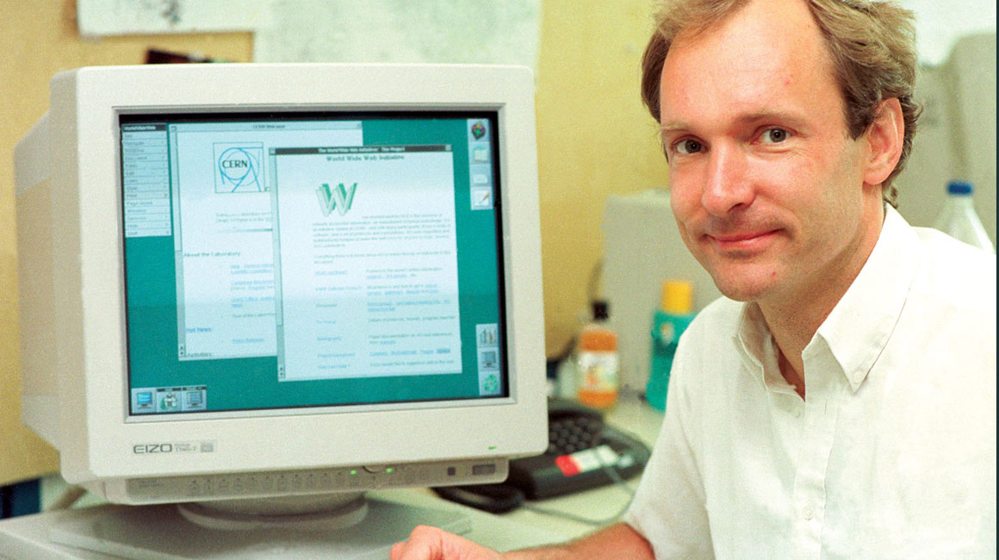
História da Internet... Como tudo começou
» 1992... Tim Berners-Lee criou a World Wide Web (WWW) é um sistema de documentos em hipermídia, é a web.» 1994... Tim Berners-Lee criou a world wide web Consortium (W3C) que supervisiona o desenvolvimento continuado da web, com 400 empresas;
» 1992... A empresa norte-americana Netscape criou o protocolo HTTPS (HyperText Transfer Protocol Secure), possibilitando o envio de dados criptografados para transações comercias pela internet;
» Em 1994, no dia 20 de dezembro é que a EMBRATEL lança o serviço experimental a fim de conhecer melhor a Internet;
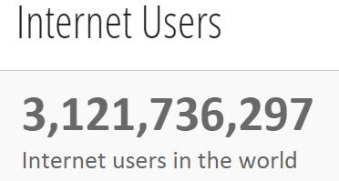
Internet no Brasil
» 105 milhões de usuários de Internet, Dezembro/2013;
» 5 colocado, país mais conectado;
» Percentual de brasileiros conectados passou de 27% para 48% entre 2007 e 2011;
» Principal local de acesso Lan House (31%), própria casa (27%) e amigos (25%);
» 52 milhões de usuários diários;
» 60 milhões de computadores (até 2012);
» Em 2013, 27 milhões de usuários já tinham banda larga;
» Conexões móveis cresceu de 233 mil para 7,2 milhões em 2013;
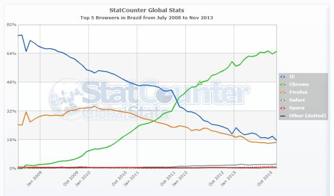
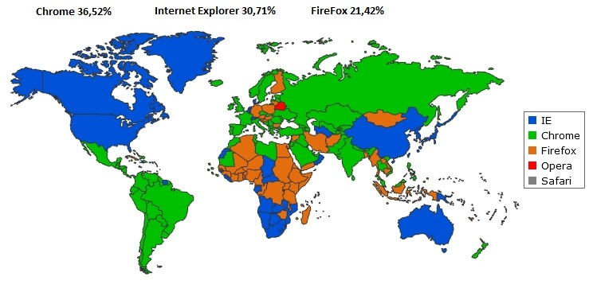
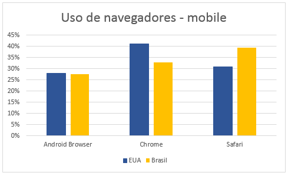
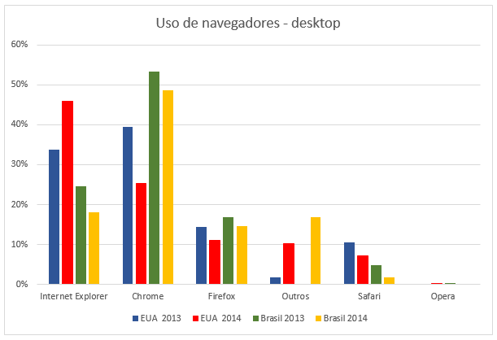
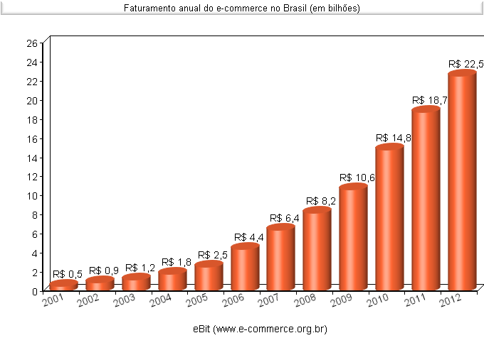
» Conectividade sem fio;
» Wireless;
» Conectar usuário melhor conexão;
» Suporte Hangout;
» Assinatura 2 GB US$ 20;
» Paga-se o que usa;
» Somente Nexus 6;
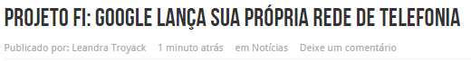
O desenvolvimento web hoje
» Proliferação internet, dispositivos, ubiquidade;
» Google ditando ritmo, mas diversas empresas: Face, Microsoft, Apple...;
» Expansão... Novas empresas, padrões, dispositivos;
"E é muito fácil garantir o seu espaço neste universo que se move como um trem bala. Basta participar"
» O que é resposivo?
» O que é adaptativo?
Não basta ser responsivo, tem que ser adaptativo
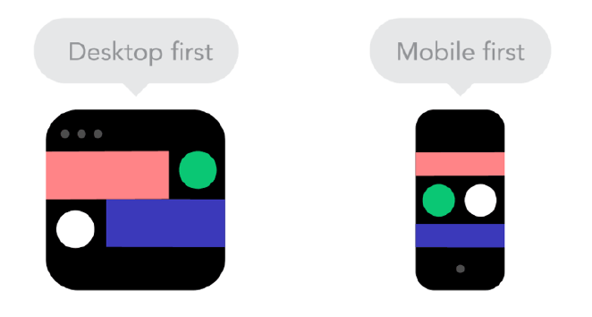
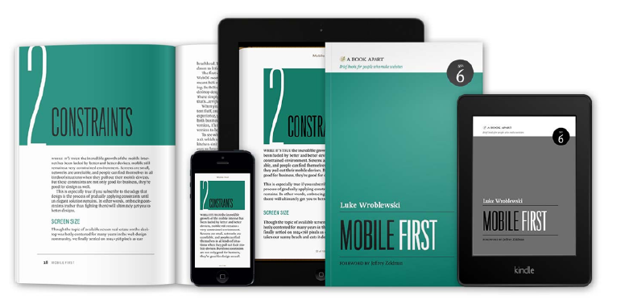
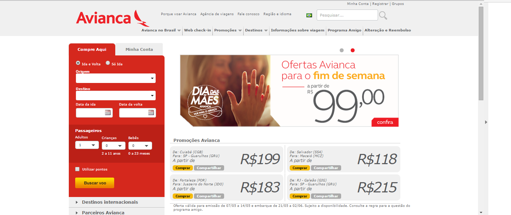
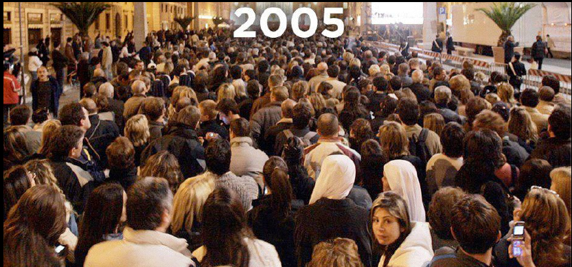
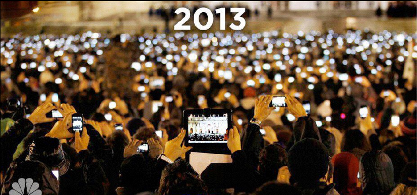
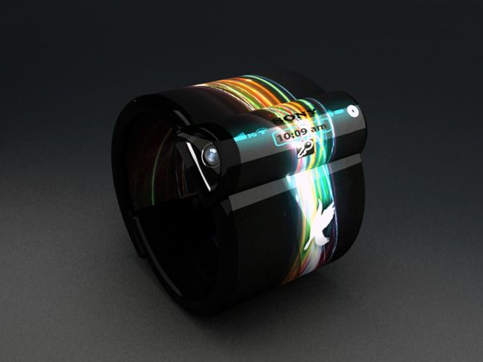
Porque você deve aprender HTML e CSS ?
» Se SIM, então, o que você usará para trabalhar ?;
» O que faz a web funcionar ?;
» O que é um front-end ?;
» Quais as diferenças de um web designer, front-end e progamador ?;
Se encaixou NO PERFIL,
respondeu SIM para alguns dos itens...
GOSTOU...
Vamos AVANTE
O estado dos navegadores
» Google Chrome o campeão de compatibilidade, mas olhe para os outros;
O que é o HTML (HyperText Markup Language); ?
» Vem do inglês, e a tradução significa Linguagem de Marcação de Hipertexto;
» Quem criou o HTML ? ;
» Infinitas possibilidades;
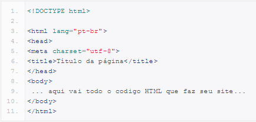
Tags, Elementos e Atributos HTML
Tags
» As tags escreve-se utilizando caracteres < e >;
» Define início e fim HTML;
» Uma tag de início e outra de fim, usando a /;
Atributos
» Definem propriedade de um elemento HTML;
» São colocados sempre na tag de abertura, após o nome do elemento;
» O atributo tem um nome, leva o sinal de (=), ainda cercado de (") ou (') e um valor;
Elemento
» É uma estrutura semântica;
» Composto por tag de abertura, conteúdo e tag fechamento;
Frames
Tags
» São as divisões que se pode fazer em uma página;
» Frames x DIVs = SEMPRE Div;
» Uma tag de início e outra de fim, usando a /;
Cores
Gerador 2
Cores
Exemplo de imagem
Formulários